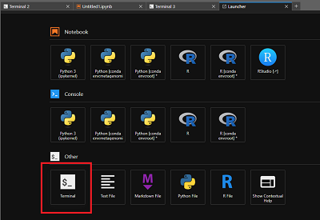
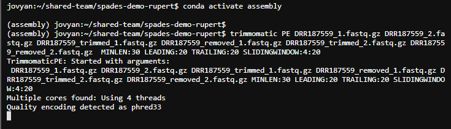

Assembling a genome from short reads (e.g. Illumina) using SPAdes#
Acknowledgements
This walkthrough was adapted from Conor Meehan's Pathogen genomics course under a CC BY-NC-SA 4.0 license. The walkthrough was modified to include CLIMB-BIG-DATA specific intructions and additional explanation of certain steps.
De novo genome assembly is a process used to reconstruct the complete genome sequence of an organism without the need for a reference genome. In the case of bacterial genomes, de novo assembly involves piecing together short DNA sequences, called reads, obtained from high-throughput sequencing technologies. In this walkthrough, you will learn how to use SPAdes to assemble short reads into a genome. If you would like to read more about genome assembly, there is more information here.
Other tools associated with SPAdes can be used to assemble metagenomes sequenced using short read technologies (metaSPAdes) or viral genomes (e.g. rnaviralSPAdes or coronaSPAdes). This is not covered here but is outlined in the SPAdes github and associated metaSPAdes and coronaSPAdes papers.
We will:
- Manage our software environment using
conda - Download some sequenced reads into your CLIMB-BIG-DATA session
- Trim the reads to remove low quality bases and reads with
trimmomatic - Assemble the reads into a genome using
SPAdes
This demonstration uses one of the samples from Hikichi et al which are the DRR187559_1.fastqsanger.bz2 and DRR187559_2.fastqsanger.bz2 files from this zenodo record
BEGIN#
Launch terminal#
Select File -> New -> Terminal, or click the Terminal icon on the launcher pane. You'll get a new terminal tab in the activity bar, and find yourself in a bash shell.

This will open a new terminal session

Create a folder to store the sequenced read data and the genome assembly#
Create a folder called spades-demo followed by your name in the shared-team directory, (i.e. spades-demo-rupert) and move into it. This is where we will store the data and the genome assembly.
mkdir ~/shared-team/spades-demo-rupert
cd ~/shared-team/spades-demo-rupert
Download the fastq raw data into this folder. These are somewhat large files and will take about one minute.
wget https://zenodo.org/record/4534098/files/DRR187559_1.fastqsanger.bz2
wget https://zenodo.org/record/4534098/files/DRR187559_2.fastqsanger.bz2
Info
Remember you can copy-paste commands from this walkthrough into the terminal.
Trimmomatic and SPAdes prefer gzipped files (files that end in .gz) but our downloaded file is a bzip2 file (ends in .bz2). We need to convert these types before we proceed. We will also rename them into more conventional naming scheme for illumina reads (that is, they end in _1.fastq.gz and _2.fastq.gz)
bzcat DRR187559_1.fastqsanger.bz2 | gzip -c > DRR187559_1.fastq.gz
bzcat DRR187559_2.fastqsanger.bz2 | gzip -c > DRR187559_2.fastq.gz
Most sequencers produce .gz files so this is not necessary if your file is already in that format.
Use ls to check that the files are there and have the correct names
ls -ahl
Which should give you something like this:
jovyan:~/shared-team/spades-demo-rupert$ ls -ahl
total 272M
drwxr-xr-x 2 jovyan users 4 Jul 20 17:17 .
drwx------ 7 jovyan 1000 9 Jul 20 17:13 ..
-rw-r--r-- 1 jovyan users 73M Jul 20 17:17 DRR187559_1.fastq.gz
-rw-r--r-- 1 jovyan users 61M Jul 13 21:00 DRR187559_1.fastqsanger.bz2
-rw-r--r-- 1 jovyan users 76M Jul 20 17:17 DRR187559_2.fastq.gz
-rw-r--r-- 1 jovyan users 63M Jul 13 21:00 DRR187559_2.fastqsanger.bz2
Install SPAdes and trimmomatic using Conda#
It is recommended to always install packages for a project in their own environments so here will we create an enironment and install SPAdes in one step.
conda create --solver libmamba -y -n assembly -c bioconda spades trimmomatic
conda activate assembly
Warning
Remember you can not install packages in the base Conda environment. You must create a new environment and activate it first.
Use trimmomatic to filter out bad reads and trim the ends as needed#
The order of commands for paired end reads is:
trimmomatic PE <forward reads input name>
<reverse reads input name>
<trimmed forward reads out name>
<removed forward reads out name>
<trimmed reverse reads out name>
<removed reverse reads out name>
<trimming options>
We will trim the reads in the follow ways:
- Remove all reads shorter than 30bp MINLEN:30
- Remove bases from the start of a read if they are below a quality score of 20, LEADING:20
- Remove bases from the END of a read if they are below a quality score of 20, TRAILING:20
- Use a sliding window of 4 bases across the read, removing any set of 4 bases where the average score drops below 20, SLIDINGWINDOW:4:20
trimmomatic PE DRR187559_1.fastq.gz DRR187559_2.fastq.gz DRR187559_trimmed_1.fastq.gz DRR187559_removed_1.fastq.gz DRR187559_trimmed_2.fastq.gz DRR187559_removed_2.fastq.gz MINLEN:30 LEADING:20 TRAILING:20 SLIDINGWINDOW:4:20

At this stage you should use Fastqc to look at the read quality and see if it is ok, but we will skip this step as it is not always needed.
Assemble the genome using SPAdes#
- The
-1and-2flags are the forward and reverse trimmed reads that came from trimmomatic, respectively. -ois the anme of a directory to store the output in-tis the number of threads to use. This should be the number of cores you have available.-mis the amount of memory that SPAdes can use. This should be the amount of memory you have available.
spades.py -1 DRR187559_trimmed_1.fastq.gz -2 DRR187559_trimmed_2.fastq.gz -o DRR187559_spades -t 6 -m 8
Examining the output#
SPAdes will mention all the output files in the log. All the output will be in the folder we specified with the -o flag.
===== Terminate finished.
* Corrected reads are in /shared/team/spades-demo-rupert/DRR187559_spades/corrected/
* Assembled contigs are in /shared/team/spades-demo-rupert/DRR187559_spades/contigs.fasta
* Assembled scaffolds are in /shared/team/spades-demo-rupert/DRR187559_spades/scaffolds.fasta
* Paths in the assembly graph corresponding to the contigs are in /shared/team/spades-demo-rupert/DRR187559_spades/contigs.paths
* Paths in the assembly graph corresponding to the scaffolds are in /shared/team/spades-demo-rupert/DRR187559_spades/scaffolds.paths
* Assembly graph is in /shared/team/spades-demo-rupert/DRR187559_spades/assembly_graph.fastg
* Assembly graph in GFA format is in /shared/team/spades-demo-rupert/DRR187559_spades/assembly_graph_with_scaffolds.gfa
The important output files:
- scaffolds.fasta: The final assembly you should use
- assembly_graph.fastg: Assembly graph
- spades.log: Full log file for bug reporting
Use the head command to have a look at the final output assembly file:
head DRR187559_spades/scaffolds.fasta
Which should give you something like this:
>NODE_1_length_419723_cov_11.898846
TACAAAGGAGAAAAAAAGAAGACAACCAAGCCCAATAATGGACTGGCCGCCTAATAATAA
AAACTCTAAAAGTTGTAATTTAAAATAGTTCTTTAAATTATATACCCACCACATTTGGTG
GAGAACCAAAAATTAGCCGAAAAACATCATTTCTGAAGTTATCGGCTAAAGTTATAAATT
ATATTTATTTGTACATGAACAAATAATTTACATTAATTTGTCATTTCTTCTTTTTCCCAA
TCGATTTTATATCTTTCTGAAGAACGATCTGTCCATTTATCTTTAGTATTGGTACCTTTC
CAATTTGTTGAAGTCCAATGCAATTGGTAGTCATCACGAACTCGTTCGTATATTACATCT
ATATTTGTTTGTTGTTTGGATGCTTTTCTATCCATAGTAATAACTGTAGCGAAGTCTGGT
GAAAACCCTGAAGATAATAGAGAACTTGCTTTGTTAGGATCAAGGAAGTTCTCTGCTGCT
TTCATAGAACCATTTCTAGTTTTCATGAAAAGTTGATTGCCATATACCGGGTTCCAAGAA
Deactivate your Conda environment when you are finished
conda deactivate
Post assembly steps#
Once assembly is finished you can do a more in depth check of the quality and completeness using the BUSCO and Bandage. You can get basic metrics such as N50 using the tool Quast which can be downloaded via Conda